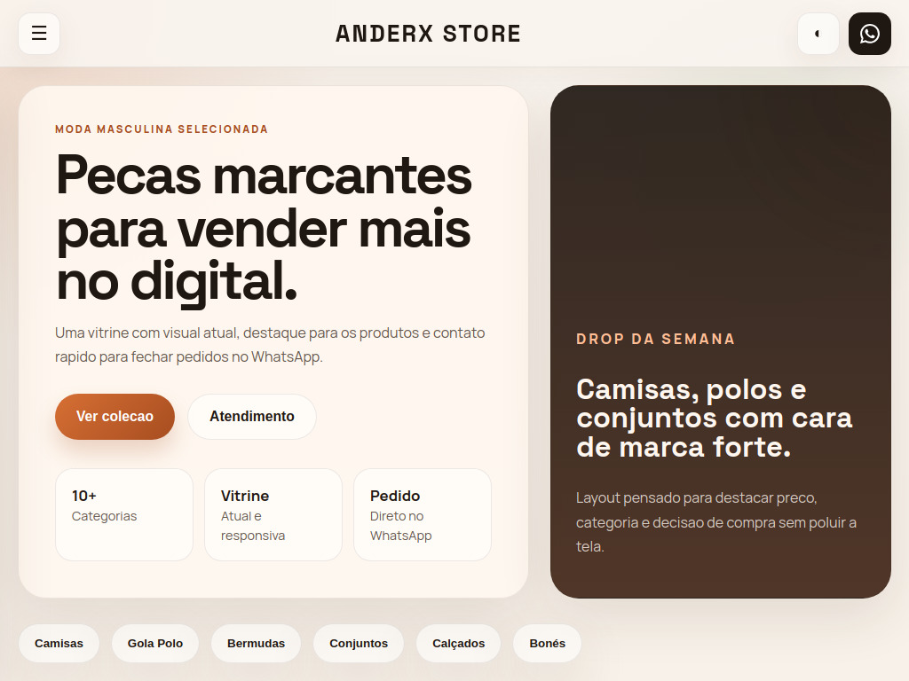
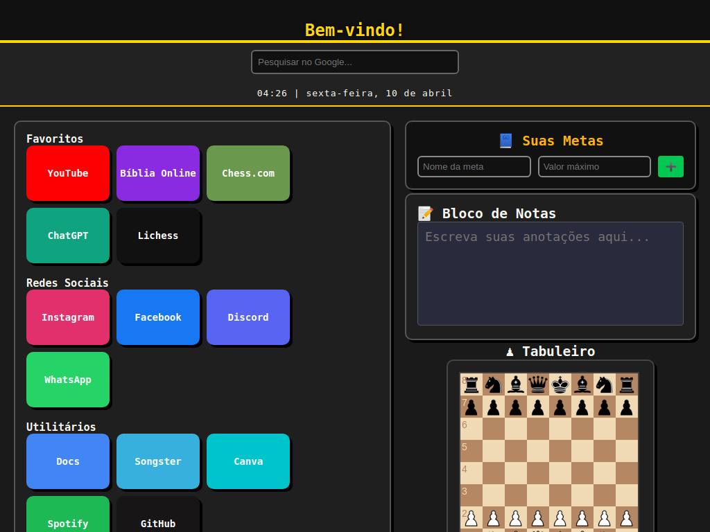
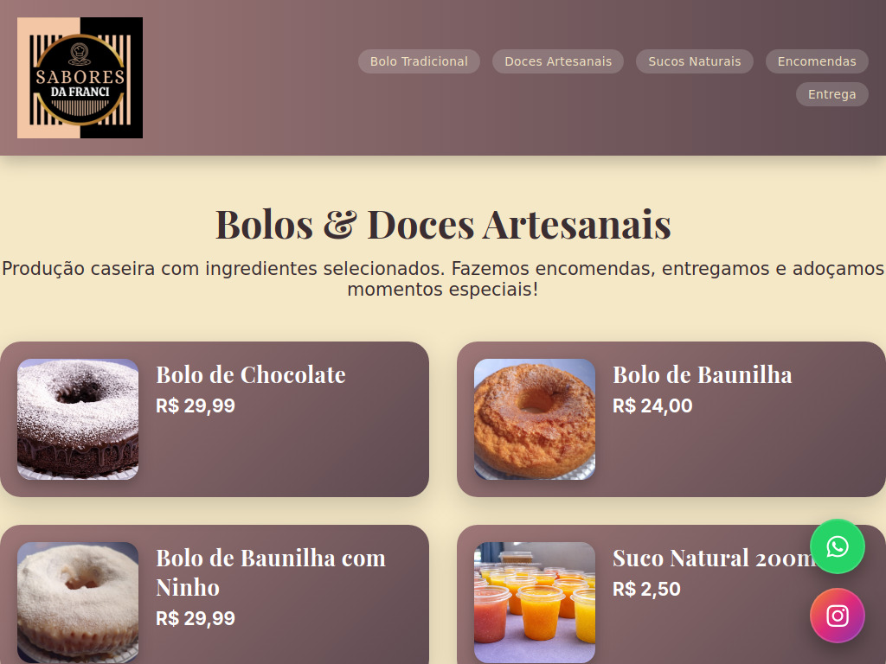

Sobre mim
Sou Jacob Derek, desenvolvedor autodidata focado em criar interfaces claras, rapidas e bem estruturadas. Nao gosto de complicar: prefiro codigo direto, layout limpo e resultado que funciona na pratica.
Desenvolvedor focado em produto, performance e codigo limpo
Interfaces limpas, rapidas e adaptadas para qualquer tela.
Base tecnica para pensar performance, organizacao e codigo mais solido.
Uso IA como ferramenta para acelerar, revisar e melhorar a qualidade do codigo.
Perfil
Sou Jacob Derek, desenvolvedor autodidata focado em criar interfaces claras, rapidas e bem estruturadas. Nao gosto de complicar: prefiro codigo direto, layout limpo e resultado que funciona na pratica.
Desenvolvo sites institucionais, landing pages e portfolios com foco em visual profissional, boa leitura e responsividade de verdade. Tambem faço ajustes, refatoracao e organizacao de codigo quando o projeto precisa evoluir.
Especialidades
Crio interfaces com boa leitura visual, estrutura sem excesso e adaptacao para desktop, tablet e celular.
Tambem estudo e aplico Rust para pensar performance, seguranca e organizacao de codigo alem do front-end.
Uso IA como ferramenta de produtividade tecnica para revisar, refatorar, acelerar iteracoes e elevar a qualidade das entregas.
Projetos em destaque
Projeto recente com foco em visual moderno, navegacao simples e apresentacao direta. Serve como base do nivel de entrega atual.
Abrir projeto

Landing page focada em apresentar o negocio de forma clara e objetiva.
Visitar
Como eu penso
Prioridade em hierarquia visual, contraste, ritmo e estrutura que fazem a pagina parecer profissional.
Organizacao de HTML, CSS e JavaScript pensando em evolucao, manutencao e menos gambiarra.
Quebra para telas menores, espacamentos consistentes e componentes que funcionam fora do meu computador.